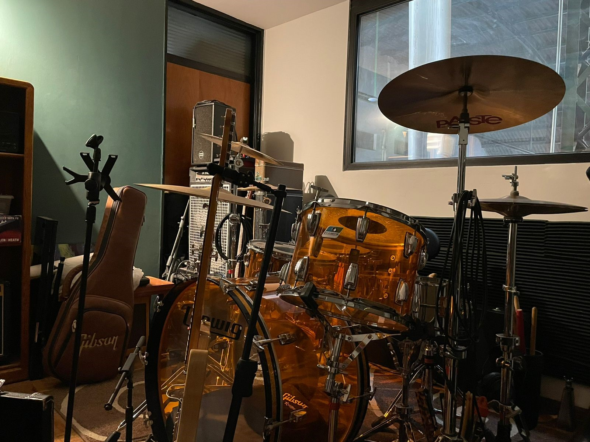
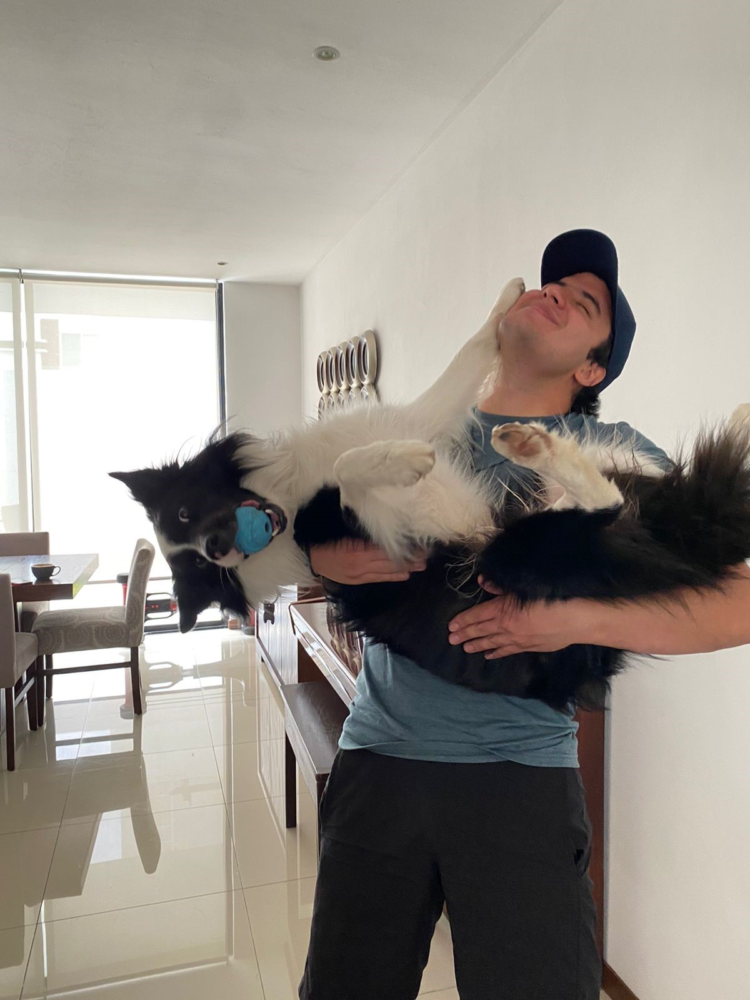
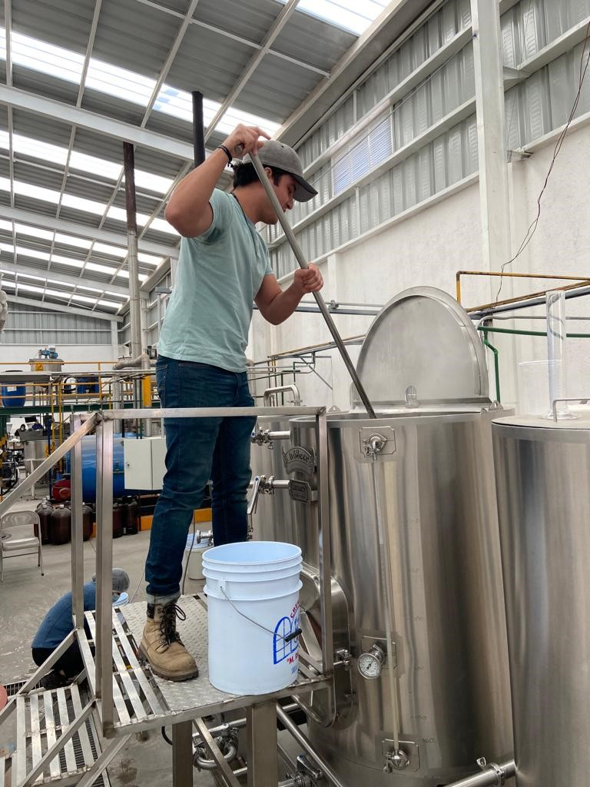

Mi nombre es Adrian Lopez, estudio en el tec de monterrey campus guadalajara la carrera de IMA. Es mi último semestre. Me gusta mucho tocar batería aunque no toque muy bien, tengo un perro border collie (se llama Otto) y estoy emprendiendo un negocio de cerveza artesanal.
  